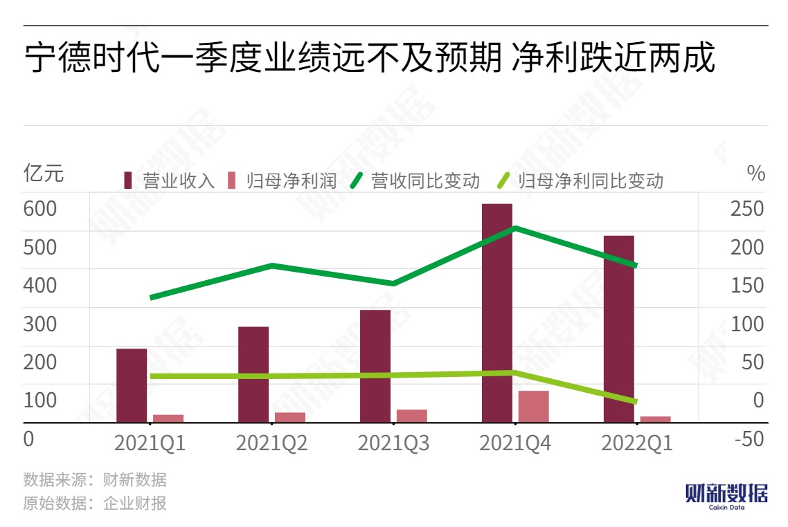

After obtaining his physics doctorate in physics degree from an Ivy League institution, Leo Zheng found it challenging to secure a job in the U.S. For eight months, he repeated the same routine every day: waking up early, browsing through LinkedIn, and submitting a job application every thirty minutes. As he grew increasingly hopeless and contemplated returning to China, he received an unexpected offer from Apple.
But this still did not guarantee that he could stay and work in the U.S.
In the 2022 fiscal year, over 478,000 individuals like Zheng submitted their H-1B visa petitions to the U.S. Citizenship and Immigration Services (USCIS), the federal agency that awards H-1B visas. Because of the overwhelming number of H-1B applications, the agency conducts a lottery system to determine which applications they will review. Ultimately, only 26.36% of the applicants qualified for review, a percentage that continues to decrease year after year.
In 2020, the Trump administration implemented an overhaul of the H-1B visa program by moving the registration process online. This change resulted in a reduction of the petition fees to a mere $10. If an applicant was chosen in the lottery, they would be required to pay all the related visa fees to ensure that their application was reviewed in detail.
Prior to this change, U.S. employers had to create full petitions for their candidates, which incurred costly fees to file, and then enter a lottery that usually commenced on April 1st.
The new registration system, however, significantly reduced the barriers to entry, potentially leading to the submission of duplicate applications.
USCIS found that a few companies entered the same applicants into the lottery multiple times to artificially increase their chances of winning a visa. This caused a record-high demand of 781,000 entries for 85,000 visa slots this year.
“Many individuals attempted to game the system by submitting multiple applications through different companies, causing a massive surge of 300,000 additional applications in 2023," said Chuck Guo, an immigration lawyer with six years of experience. "This is unfair and dilutes the chances of others in the lottery."
After graduation, international students typically use their "Optional Practical Training" to find a job, and then apply for an H-1B visa to legally work in the U.S. The H-1B visa, established in 1990, has been the primary way for companies to hire foreign employees with college degrees, including those who studied in the U.S.
"For the past 30 years, the U.S. has not updated its immigration laws, despite the population doubling and the economy growing twice as large during that time. However, the number of H-1B visas has not significantly increased.” said Guo.
According to Guo, he has noticed a significant increase in the scrutiny of legal immigrants by the immigration agency, resulting in longer processing times and unresponsive departments.
There are also certain trends among H-1B applicants in terms of the cities and professions they apply for.
Zheng explains that although international students studying STEM majors and eligible for three chances to participate in the H-1B lottery during their OPT period, they often work for positions such as "software engineer" or "data scientist" at large tech companies. In the past five years, over 60% of H-1B applicants have been employed in computer science and data science roles.
Additionally, H-1B applicants have relatively high average salaries. For instance, in 2022, H-1B applicants in California earned an average annual salary of over $120,000, with those in Washington and New York following closely behind at $114,000 and $97,000, respectively.
"This is a trend. The H-1B visa requires applicants to have a bachelor's degree or higher, so positions are often located in big cities. And the legal and immigration fees are not small amounts, so it's usually larger companies that apply," said Guo.
Both Texas and the Bay Area had three cities where employers filed more than 10,000 H-1B petitions in 2022. In Texas, the cities were Austin, Plano, and Dallas. Meanwhile, New York City had the highest number of H-1B petitions filed by employers, with over 30,000.
Even if you are selected for the H-1B lottery, it does not guarantee that you will receive the visa.
Zheng encountered a problem when he applied for his H-1B visa. The immigration agency determined that his doctoral degree was not in line with data science and requested additional documentation.
In recent years, the government has gradually lifted restrictions on H-1B visas, resulting in a higher approval rate during this period. In the 2022 fiscal year, the approval rate was 98%.
The government has proposed increasing the registration fee to $215, which is expected to be effective for next year's lottery. Additionally, the agency intends to draft regulations to prevent future fraud.
To attract global talent, Guo believes that the United States should have a more comprehensive and fair consideration for legal immigrants.